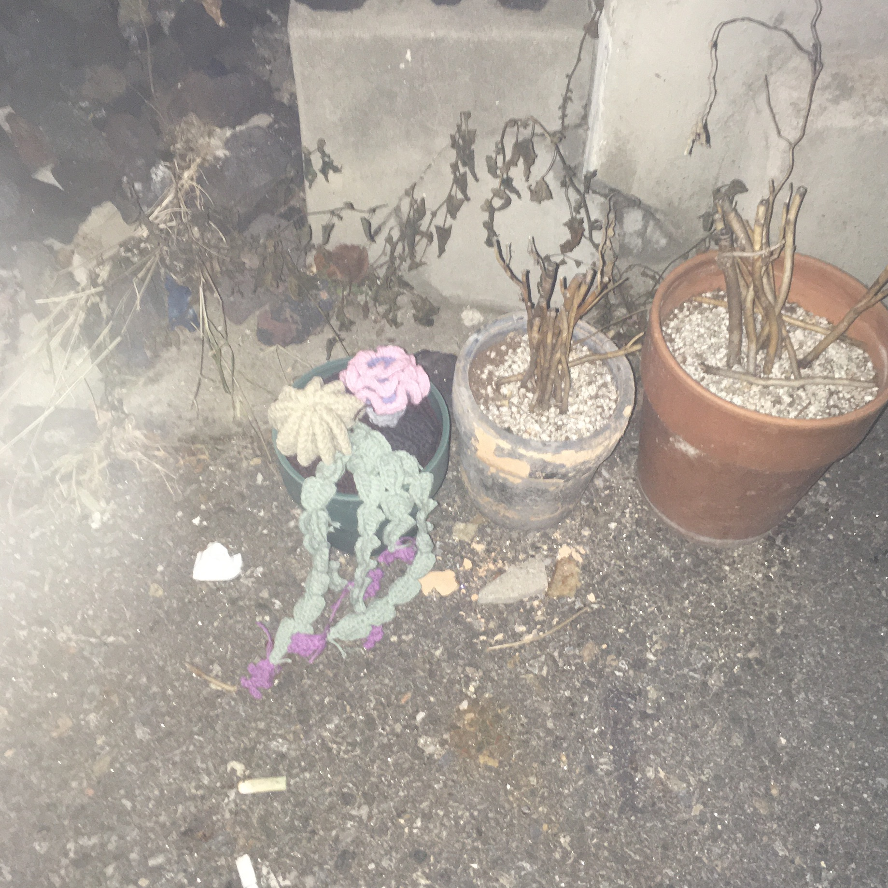

<div class="prj-info">
  <div class="mobile-prj-info-wrapper">
    <div class="prj-img-wrapper">
      
    </div>
    <div class="prj-name-subtitle-wrapper">
      <div class="prj-name-wrapper">
        <p class="prj-title">선인장화분</p>
      </div>
      <p class="prj-subtitle">식물을 뜨개질로 만들면 뭐가 달라지나...</p>
    </div>
  </div>
  <button class="mobile-prj-more-btn" onclick="showPrjDetail()">
    + 더보기 / 뜨개일지
  </button>
  <button class="mobile-prj-close-btn" onclick="closePrjDetail()">
    - 닫기
  </button>
  <div class="mobile-prj-detail-wrapper">
    <div class="prj-info-wrapper">
      <p class="prj-info-item">도안 출처…</p>
      <p class="prj-info-content">
        <a
          href="https://ravel.me/cactus-garden-6"
          class="link-hover"
          target="_blank"
          >Ravelry</a
        >
      </p>
      <p class="prj-info-item">시작 날짜…</p>
      <p class="prj-info-content">2024-12-25</p>
      <p class="prj-info-item">완성 날짜…</p>
      <p class="prj-info-content">2024-12-31</p>
    </div>
    <div class="prj-record">
      <h3>뜨개 일지</h3>
      <ul class="prj-record-list">
        <li class="prj-record-item">
          <a class="link-hover" href="20241225.html"
            ><span>뜨개 식물에 대한 강한 열망</span
            ><span class="prj-record-date">2024-12-25</span></a
          >
        </li>
        <li class="prj-record-item">
          <a class="link-hover" href="20241231.html"
            ><span>2024년의 마지막 성취</span
            ><span class="prj-record-date">2024-12-31</span></a
          >
        </li>
      </ul>
    </div>
  </div>
</div>
